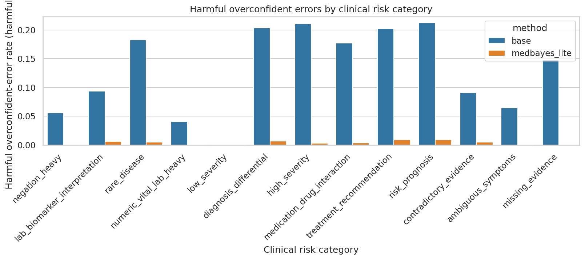

Explainer
1University of Central Florida · 2North South University · 3Purdue University Fort Wayne · 4University of Southern Queensland · 5Meharry Medical College · 6Technical University of Munich · 7Imperial College London
Clinical language models are often confidently wrong, and most dangerously so on high-severity questions and on data unlike their training set. MedBayes-Lite wraps an existing model in a layer that measures its uncertainty, recalibrates its confidence, and sends low-confidence cases to a clinician. It needs no retraining and adds no parameters.
MedBayes-Lite sits between a trained clinical predictor and the clinician. It changes what the system does with the model's confidence: answer when the calibrated confidence is high enough, and escalate to a person when it is not.
On MedMCQA and MedQA-USMLE, calibration error falls by 0.23–0.33 and confident, wrong, high-severity answers fall toward zero (paired bootstrap, p ≈ 0).
Trained on MedMCQA and tested on MedQA-USMLE, the base models are confidently wrong on about 21% of high-severity questions. With the layer: 0.2% and 0.0%.
Temperature scaling alone gets most of the calibration gain, deep ensembles rank risk better, coverage drops, and well-calibrated models gain nothing. All of it is reported.
Transformer-based clinical predictors assign high confidence to incorrect answers, and the miscalibration is worst on ambiguous, high-severity, and out-of-distribution cases, exactly where a confident error costs the most. Existing remedies each leave a gap.
Temperature scaling makes the confidence scale honest, but on its own it does not decide anything. A deployed system still answers every question.
A five-member deep ensemble of Bio_ClinicalBERT needs 541M parameters and 2.85 GB of GPU memory, against 108M and 0.43 GB for the single model MedBayes-Lite wraps.
A wrong answer about a medication interaction is not equivalent to a wrong answer on a low-stakes item. Standard metrics weight all errors equally.
The layer applies to open-weight encoders (BERT-base, BioBERT, Bio_ClinicalBERT, PubMedBERT) with full internal access. A sampling-only contrast with Qwen2.5-7B-Instruct is included for comparison.
Run M = 15 stochastic forward passes with inference dropout 0.2. Their average is the predictive distribution; their spread is the uncertainty signal.
Fit a temperature on a held-out calibration set so that reported confidence matches empirical accuracy.
Convert the calibrated distribution into a normalized confidence and answer only above a threshold τ = 0.70; otherwise defer to human review.
harmful@0.8 is the rate of answers that are confident (≥ 0.8), wrong, and high-severity. Selective accuracy and coverage are measured at τ = 0.70. Temperature scaling is shown as a strong, cheap baseline, not a strawman.
| Setting | Method | ECE ↓ | harmful@0.8 ↓ | Selective acc. ↑ | Coverage | AURC ↓ |
|---|---|---|---|---|---|---|
| MedMCQA · PubMedBERT | Base | 0.255 | 0.056 | 0.571 | 0.541 | 0.376 |
| Temperature scaling | 0.081 | 0.012 | 0.721 | 0.217 | 0.375 | |
| MedBayes-Lite | 0.023 | 0.003 | 0.818 | 0.100 | 0.392 | |
| MedMCQA · BioBERT | Base | 0.317 | 0.067 | 0.457 | 0.508 | 0.517 |
| Temperature scaling | 0.085 | 0.003 | 0.618 | 0.083 | 0.515 | |
| MedBayes-Lite | 0.021 | 0.000 | 0.714 | 0.021 | 0.521 | |
| MedQA-USMLE · PubMedBERT | Base | 0.325 | 0.213 | 0.437 | 0.541 | 0.539 |
| Temperature scaling | 0.094 | 0.015 | 0.583 | 0.106 | 0.533 | |
| MedBayes-Lite | 0.046 | 0.002 | 0.539 | 0.026 | 0.554 |
Table 1. Selected rows from the paper's Table 8 (mean over three seeds). MedBayes-Lite gives the lowest calibration error and removes nearly all harmful overconfident errors, but answers fewer questions and does not improve AURC. On MedQA-USMLE with BioBERT (not shown), selective accuracy falls from 0.288 to 0.143.
Models trained on MedMCQA are evaluated on MedQA-USMLE. "Drift" is the change in calibration error from in-distribution to out-of-distribution.
| Model | Method | ID ECE | OOD ECE | ECE drift | OOD harmful@0.8 |
|---|---|---|---|---|---|
| PubMedBERT | Base | 0.255 | 0.325 | +0.070 | 0.213 |
| PubMedBERT | MedBayes-Lite | 0.030 | 0.055 | +0.026 | 0.002 |
| BioBERT | Base | 0.317 | 0.410 | +0.093 | 0.217 |
| BioBERT | MedBayes-Lite | 0.015 | 0.084 | +0.069 | 0.000 |
Table 2. From the paper's Table 9. A model that is most overconfident exactly when it is most likely to be wrong is the failure the layer is designed to contain.
Each question is assigned to one or more of 13 rule-based clinical risk categories. The base model's harmful overconfidence concentrates in high-severity, diagnosis, treatment, and medication questions; the layer drives it toward zero in each.

Figure 1. Harmful overconfident error rate by clinical risk category, base model (blue) versus MedBayes-Lite (orange). From the paper's Figure 6.
Across 739 model, method, and category groups, the Clinical Uncertainty Score correlates with the harmful overconfident error rate at r = 0.88. Adding it to ECE raises the variance explained in harmful error from R² = 0.60 to 0.79.
At τ = 0.70, the layer defers 97–99% of incorrect predictions, against roughly 55% for the base model.
On Bio_ClinicalBERT, one pass takes 32 ms; ten Monte Carlo passes take 60 ms, at the same 0.43 GB of memory and the same 108M parameters.
MedBayes-Lite is positioned as a deployable calibration-and-abstention layer, not as a new uncertainty-aware architecture and not as a guarantee of clinical safety.
AURC is statistically unchanged in three of four settings and marginally worse in one. On PubMedQA, deep ensembles achieve the best AURC.
Temperature scaling, a single parameter, captures most of the calibration gain (ECE 0.255 → 0.081 on PubMedBERT).
On MedMCQA with PubMedBERT, coverage at τ = 0.70 falls from 0.541 to 0.100: the model answers far less often.
The fine-tuned PubMedQA encoders are already well calibrated, and the layer neither helps nor hurts them.
All results are on public question-answering benchmarks with three seeds and one shift pair; clinical deployment was not evaluated, and the optional attention pathway stayed inactive (λ = 0).
@article{hossain2026medbayes,
title = {MedBayes-Lite: A Clinical Uncertainty Governance Layer
for Risk-Aware Medical Decision Support},
author = {Hossain, Elias and Nipu, Md Mehedi Hasan and Sheikh, Maleeha and
Nuzhat, Tasfia and Rana, Rajib and Neupane, Subash and
Schuller, Bj{\"o}rn W. and Yousefi, Niloofar},
journal = {Frontiers in Digital Health},
year = {2026},
note = {Accepted. arXiv:2511.16625}
}